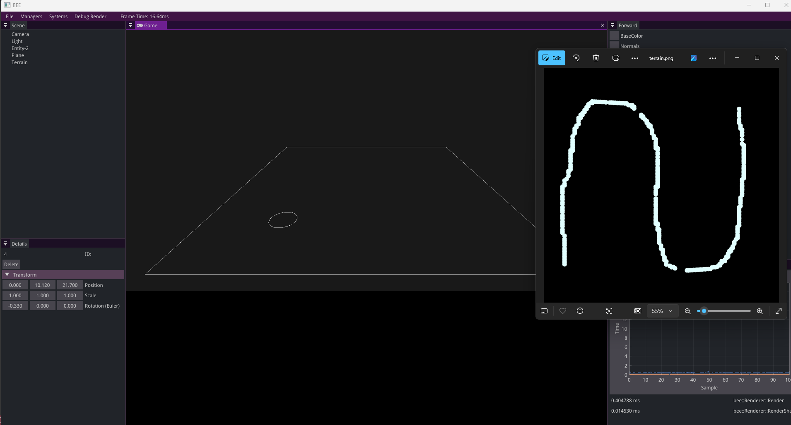
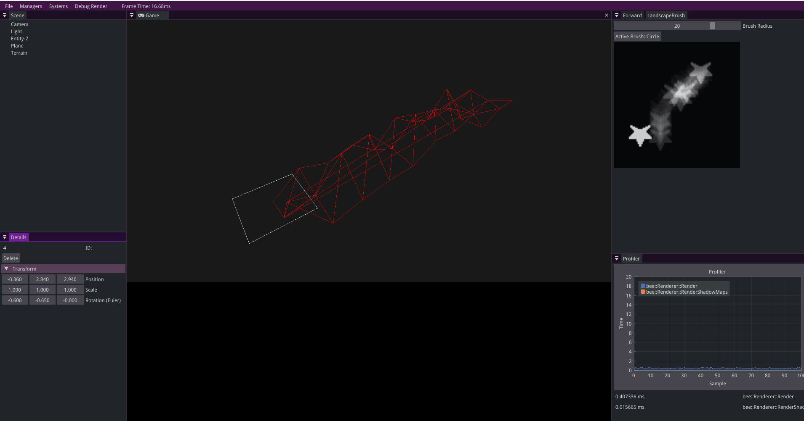
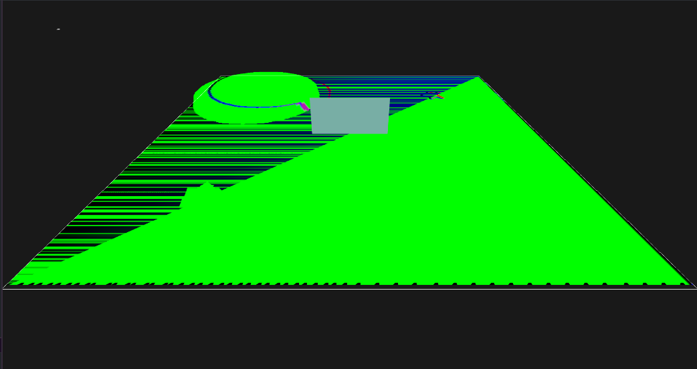
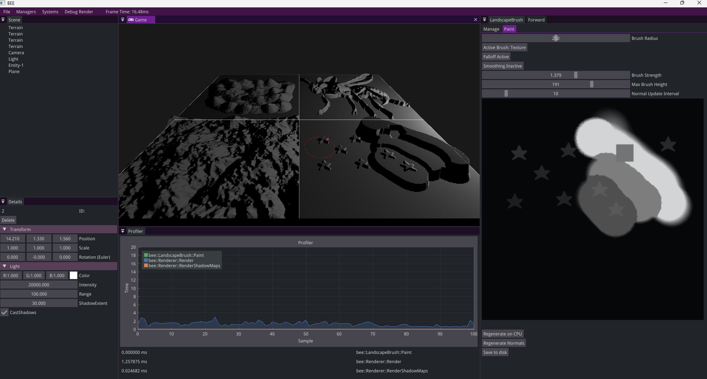

As a student, I can create and adapt a detailed plan for my project, so that I take steps towards my dream career in a structured way.
💭 Suggested Evidence
- Week 1 self-study plan
- Weekly progress reviews
- Group meeting attendance
- Roundtable survey
💯 Detailed Rubric
🔴 Poor: The student has handed in their study plan on time. The plan is complete and has acceptable content.
🟠 Insufficient: The student has processed teacher feedback on the initial study plan. The student has attended most study-group meetings. The Learning Log section for this ILO contains a progress review for most weeks.
🟡 Sufficient: The student has proactively participated in all study-group meetings. Each week, the Learning Log contains a progress review with an actionable plan for the upcoming week.
🟢 Good: The student has evaluated their study plan over time and has adapted it when needed, based on critical self-review and feedback received (e.g. during the study-group meetings).
🔵 Excellent: The student reflects well on their developed skills and on their progress towards their dream career. The Learning Log shows critical reflection and lessons learned about managing a study project.
🔍 Evidence
Week 1️⃣: Self-study plan
Give an outline of your self-study plan. You don’t have to present the complete plan here (you’re already handing in the one-pager on Brightspace!), but just repeat the most important points.
Job title: Senior Tools Programmer at Epic Games
Project title: Terrain brushes for the Bee engine
Week 3 milestone: Be able to “paint” on a surface and have that be saved to a greyscale png.
Week 5 milestone: Upon loading in the terrain have the height of the polygons in the grid be dependent on the heightmap from the png using either just a bunch of planes or doing it the way the OpenGL article below instructs.
Week 7 milestone: Optimize the brush so that real time editing of the terrain goes smoothly without lag and add a fitting UI that helps the user with the brush (brushsize, strength, etc.)
Stress tests: I can increase the polycount in the terrain to test performance on high-level terrains. And I can test how big the brush can be (how many polygons will be updated at the same time). I will make use of the bee engine profiler for this.
Stretch goals:
- Having the colour of the polygon be bound to the height of the polygons which can make for some cool mountain like effects.
- User defined shapes for brushes.
- Noise based brushes.
Week 2️⃣: Progress meeting
Make sure you can give a live demo of your project during the weekly meeting. Paste a screenshot/video here. 
What have you been doing over the past week? How much time did it take?
- Made my self study plan.
- Researched terrain generation and terrain brushes in other engines.
- Researched terrain rendering.
- Made the bee engine compile and started working on a brush which saves to a .png.
What problems/challenges (foreseen or unforeseen) did you run into?
I knew that getting the brush position and where it paints on the canvas and eventually saving that to a .png would take a bit of time but I eventually figured it out. What took some time was figuring out and better understanding the stb_image library. I still have to decide whether I want to save it as 8 or 16 bit.
What are you planning to do in the upcoming week?
Visualize what you paint in the editor (I am thinking of something with ImGui) and better refine the brush by having it paint with a falloff, strength, etc.
Are you on track overall? Do you need to adjust your milestones / stress tests (either up or down)? If so, what are your new milestones / stress tests?
I think as of now I am on track so I wont be changing any of my milestones. I will however add “Tri-planar mapping” as a stretch goal after talking to Bojan about my self-study plan.
Do you have any technical questions you need help with? If so, what are they?
No.
Week 3️⃣: Progress meeting
Make sure you can give a live demo of your project during the weekly meeting. Paste a screenshot/video here.
What have you been doing over the past week? How much time did it take? This past week i’ve been buisy with adding texture drawing for the heightmaps. I have also been researching the rendering aspect of the terrain more.
What problems/challenges (foreseen or unforeseen) did you run into? It took a bit of trial and error to get the texture drawing working but eventually i got there. I am totally not familiar with rendering yet and I will have to spend a lot of time trying to get that working in my project.
What are you planning to do in the upcoming week? Get a grid of triangles to be drawn according to the heightmap put in by the user.
Are you on track overall? Do you need to adjust your milestones / stress tests (either up or down)? If so, what are your new milestones / stress tests? I have put the “User defined brushes” stretchgoal to the week 3 milestone. But I feel like I am on track.
Do you have any technical questions you need help with? If so, what are they? No.
Week 4️⃣: Progress meeting
Make sure you can give a live demo of your project during the weekly meeting. Paste a screenshot/video here.

What have you been doing over the past week? How much time did it take? Last week I have been trying to get some rendering working and trying to get a better understanding of how OpenGL and glsl work. …
What problems/challenges (foreseen or unforeseen) did you run into? Me having a hard time getting textures to work in shaders. …
What are you planning to do in the upcoming week? Getting the heightmap to render the right way, maybe with textures. …
Are you on track overall? Do you need to adjust your milestones / stress tests (either up or down)? If so, what are your new milestones / stress tests? I think so? I feel like i am behind because the rendering takes me quite long but I am still somewhat on track i believe. …
Do you have any technical questions you need help with? If so, what are they?
…
Week 5️⃣: Progress meeting
Make sure you can give a live demo of your project during the weekly meeting. Paste a screenshot/video here.

What have you been doing over the past week? How much time did it take?
I have been working on getting the rendering working, this took me a bit long to understand because I was very unfamiliar with the way BEE handles it’s rendering. Right now my code is just kind of chucked into the rendering loop, I would like to eventually put this into my own files. I have also fixed some small brush regarding bugs i still had.
What problems/challenges (foreseen or unforeseen) did you run into?
That getting the heightmap into the vertex shader would take so much time. I tried to go with the way BEE handles it but it was quite a task.
What are you planning to do in the upcoming week?
Getting normal calculation and some texturing.
Are you on track overall? Do you need to adjust your milestones / stress tests (either up or down)? If so, what are your new milestones / stress tests? Yes.
Do you have any technical questions you need help with? If so, what are they?
…
Week 6️⃣: Progress meeting
Make sure you can give a live demo of your project during the weekly meeting. Paste a screenshot/video here. In the image below I show that i am working on my normal generation. There is something happening but all the normals are mirrored and there is a huge artifact which covers half of the terrain. 
What have you been doing over the past week? How much time did it take? I have spent a lot of time getting back into it after the vacation and generating normals for my heightmap. Generating the normals took most of my week because of an issue I have explained below.
What problems/challenges (foreseen or unforeseen) did you run into? What took me a really long time was generating the normals correctly, this was partly because I did not yet understand the math behind it well enough and it took me a really long time to figure out that the max mesh size for bee was 255x255. Before I tried it with a higher subdivision count but then the uint16_t which stored the normals, which has a max value of 65535, would overflow at a certain point which would mess up the normals. At first I thought it had something to do with the UV’s not being correct and there being something wrong in my generation, so I spent a long time looking in the wrong place.
What are you planning to do in the upcoming week? I got the feedback from Bert that i should spend more of my time actually building the right things which makes a good tool. Brushes that can actually make mountains, good mouse-mountain interseciton, etc. I will also rework a bit of my system so i can load in and render more than 1 heightmap at a time by doing some sort of heightmap ID system. I will also start with the optimization of my tool by finding hotspots in my code.
Are you on track overall? Do you need to adjust your milestones / stress tests (either up or down)? If so, what are your new milestones / stress tests? My week 7 milestone was: Optimize the brush so that real time editing of the terrain goes smoothly without lag and add a fitting UI that helps the user with the brush (brushsize, strength, etc.). I will also be updating my stresstest from amount of subdivisions to how many times per frame we can update the normals.
I will change this to: Optimize the brush so that real time editing of the terrain goes smoothly without lag and add multiple brushes such as smoothing, falloff, etc. Start with making my API a bit cleaner and user friendly.
Do you have any technical questions you need help with? If so, what are they? No.
Week 7️⃣: Progress meeting
Make sure you can give a live demo of your project during the weekly meeting. Paste a screenshot/video here. Here you can see that I fixed all the normals and I am able to load and render multiple heightmaps. 
What have you been doing over the past week? How much time did it take? This week I have spent time on making a smoothing and a falloff brush, so the “mountain making” part of the tool is now working. I have also redone a bit of my code so that I can render more than 1 heightmap at a time. Before I only stored 1 heightmap which was the one you were working on. But now I store multiple and I link them together by using a HeightMapID variable where upon creation of a landscape the heightmap and the terrain entity get connected to each other.
What problems/challenges (foreseen or unforeseen) did you run into? Not a whole lot this week. Some small stuff but not like last week where it held up a lot of my progress.
What are you planning to do in the upcoming week? Next week I want to have my entire tool finished on Tuesday so it’s done before the showcase. What I want to do is change the raycasting I have right now to work on mountains instead of just the groundplane. I also want to clean up my API and make it more user friendly and optimize the painting process.
Are you on track overall? Do you need to adjust your milestones / stress tests (either up or down)? If so, what are your new milestones / stress tests? Yes, everything I want to do is in the milestone I reset in week 6.
Do you have any technical questions you need help with? If so, what are they? No